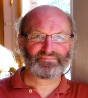

St. Joseph’s Highgate
Fr. George Koloth C.P. -
Parish Team
Parish Council
Roni Collins
Roni has been attending St. Joseph's church with her husband and three children, for the last ten years and feels very privileged to be a part of this beautiful church and community.
You can often find her at the 10am mass and afterwards manning the Repository Shop.
Noreen Feeley
Noreen is married with three children, all of which are attending or have attended St Joseph's Primary School. After a career in finance she took a break to raise her children and is now working in St Joseph's school. She has been a catechist and coordinator for the parish's Holy Communion Programme for the past 6 years.
Chiara Mayer-
Originally from Somerset, Chiara has lived in Highgate for the past 15 years and has been a parishioner of St Joseph’s since coming to Highgate.
She is married with four children. Chiara organises the monthly coffee mornings.
Mirek Skrypak
Jenny Lee
Born in London, Jenny has lived in East Finchley since 1982. She has worked as a nurse, managed opera singers, administrator work and facilitated groups for spiritual healing and self-
Jennifer Buckley
Jennifer Buckley is a primary school teacher and has been a parishioner at St Joseph’s for 24 years. She has two grown up children who both went to St Josephs Primary School. For many years they served as Altar Servers, as well as attending the Children’s Liturgy groups.
Jenny started off teaching children’s liturgy 15 years ago and has gained several other roles since; Eucharist Minister, Collector and preparing the church for the 12 o’clock mass on Sunday. What little time she has left, she spends with her family attending concerts and visiting the theatre.
Betty Pires
Betty and her family have been part of St Joseph's since the mid-
Locally, Betty serves as Treasurer of Highgate's Fair in the Square and on various committees at the Highgate Society.
Roxane Sirling
Born in North London, Roxane has lived in the parish for almost forty years. She is a retired financial advertising executive and enjoys travel, gardening, theatre and the arts. She co-
Frank Larkin
Frank works in Moorfields Eye Hospital, to which he came from Dublin to finish his medical training in 1990. That's also when he came to live in the parish.
Married to Kate, with three (now adult) children Sarah, Hugh and Julia. He joined the Parish Council in 2012
Nicholas Baumgartner
ONicholas Baumgartner is a lawyer and has worked in the City of London for more than a decade. Previously, Nicholas lived and worked in Frankfurt am Main and Hong Kong. Born and raised in Michigan, USA, Nicholas has been a member of St Joseph’s Parish since 2009, when he and his family moved into the Highgate area. Nicholas, his wife Kristin, and their two children are regulars at the 10:00 am Mass, and their children attend St Joseph’s Catholic Primary School and Nursery, respectively. In addition to being a lawyer, Nicholas holds degrees in German literature and piano performance, and remains an avid pianist and chamber musician.
Cheryl Juckes
Cheryl has lived in the parish for nearly 30 years doing everything from teaching First Communion to editing the bulletin. After many years as a journalist, she is now teaching History and Classical Civilisation A levels at a special school; her main interests are dance and theatre as well as helping out with Friends of Westminster Cathedral where she is a Council member. Cheryl teaches infant liturgy, runs the Confirmation programme, the Bazaar and variety of other events. She is also a Reader and Eucharistic Minister as well as an enthusiastic member of Roxane's cleaning parties.
Parish Administration
Ed Tierney
Ed is originally from Scunthorpe, educated at local schools followed by Ratcliffe College and Newcastle University. Trained as a computer programmer and worked for a variety of companies and organisations until 2000. He came to Highgate and St Joseph's in 1981. Parish activities have included Justice & Peace, St Vincent de Paul (SVP) and Churches Together, and various committees including currently the 100 Club. He has been employed as Parish Administrator since 2004 and is currently in the office Monday, Thursday and Friday.
| Sacramental Preparation |
| Parish Groups |
| Bulletins |
| New to the Parish |
| Safeguarding |
| Donate to our Parish |
| Other Parish Information |
| St. Joseph's Church History |
| About Our Church |
| Who are the Passionists |
| Parish Team |
| How to Find Us |